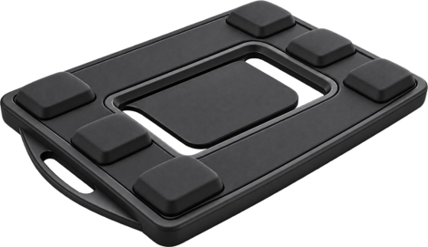

fewer high-risk postures
From 9.8 to 3.3 high-risk postures per day within one week.less time in high-risk posture
Housekeeping, stewarding, banquet and bell staff.less time in high-risk posture
Validated across diverse hospital workflows.Results are from TacnIQ.ai pilot deployments. Outcomes vary by task, baseline and rollout conditions.
WHERE BACKY FITS
Built for work that
lifts, carries and bends.
Backy is designed for teams with repeated manual-handling tasks. It has been deployed in logistics, healthcare and hospitality.

BACKY BY TACNIQ.AI
Let’s learn from
the work itself.
Tell us about your team, its manual-handling tasks and the safety question you want to answer.